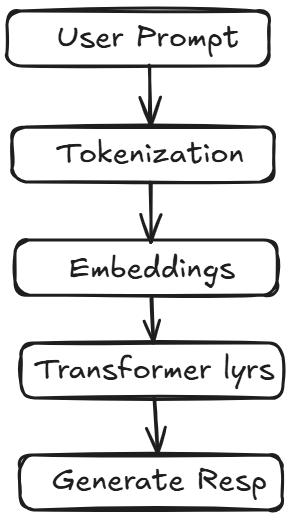
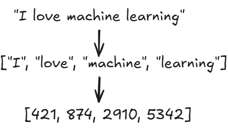
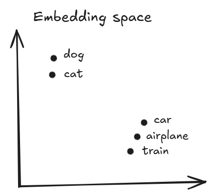
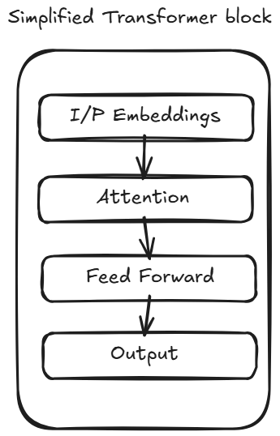

The first time I used ChatGPT, I thought it was basically a smarter version of Google. I would ask a question, get an answer in seconds, and assume it was searching the internet behind the scenes. Turns out, that’s not how it works. In fact, one of the most surprising things I learned about Large Language Models is that they don’t actually know things the way humans do. They aren’t searching through a giant database of answers either. Instead, they’re doing something much simpler and somehow much more impressive. In this blog, I’ll explain what LLMs are, how they work, and what happens behind the scenes when you type a prompt in tools like ChatGPT.
LLM stand for Large Language Model. Let’s break it down:
At a very high level, a LLM is a machine that predicts the next word. If I write
The capital of France is, you’ll probably think:
Paris, without even trying.
Your brain has seen enough language patterns to know what usually comes next. LLMs do something similar, except they’ve seen vastly more text than any human ever could.

Think about how a child learns language. Nobody gives a baby a grammar textbook on day one. Instead, they hear conversations, read books, watch videos, and slowly begin noticing patterns. For example:
“Good Morning” sounds natural.
“Morning good” sounds strange.
Over time, humans develop an intuition for language. LLMs learn in a somewhat similar way. During training, they process massive amounts oof text collected from books, websites, articles, research papers, documentation and many other sources. The model repeatedly tries to predict missing words. When it predicts incorrectly, it adjusts itself. When it predicts correctly, it reinforces what it has learned. After doing this billions of times, the model becomes surprisingly good at understanding language patterns.
Before an LLM can process text, it needs to convert words into something a computer understands. Computers don’t understand words. They understand numbers. So when you type:
I love machine learning
the model first breaks the sentence into smaller pieces called tokens. For example:
[”I”, “love”, “machine”, “learning”]
Each token gets assigned a numerical ID Something like this
I → 421
love → 874
machine → 2910
learning → 5342
These numbers become the model’s input. Think of tokenization as translating human language into a language computers can work with.

Suppose I tell you:
cat → 100
dog → 200
car → 300
Can you tell which words are related? Not really. To a computer, they’re just random numbers. That’s where embeddings come in. Embeddings convert tokens into vectors(lists of numbers that capture meaning). The interesting part is similar words often end up close together in this vector space. For example, cat, dog and puppy may have similar representations while car, airplane and train might form different cluster. This allows the model to understand relationships between concepts instead of treating every word as completely unrelated.

Now consider these two sentences:
Dog bites man
and
Man bites dog
Completely different meaning. If the model only looked at words individually, it wouldn’t know the difference. This is why positional information is added. The model needs to know which words are present and where they appear. Without position, language loses meaning.
If there’s one concept that made modern LLMs possible, it’s attention. Let’s look at a sentence:
The student submitted the assignment because he wanted a good grade.
What does he refer to? Humans immediately connect it to “student”. But how? When we read, we naturally focus on important words and relationships. Attention allows a model to do something similar. Instead of treating every word equally, the model learns which words matter most when understanding a particular token. This helps it capture context and relationships across a sentence.
In 2017, researchers introduced a new architecture called the Transformer. Most modern LLMs are built on top of this idea. A transformer consists of multiple layers stacked on top of each other. Each layer helps the model build a deeper understanding of the text. You can think of it like reading a paragraph multiple times.
First pass : Understand the words.
Second pass : Understand the grammar.
Third pass : Understand the meaning.
Fourth pass : Understand the context.
The actual process is much more mathematical, but this intuition is surprisingly close to what’s happening.
How Does ChatGPT Generate Responses?
Suppose you ask:
Explain machine learning
The model processes your prompt and predicts the most likely next token. Maybe it predicts:
Machine
Then it predicts the next token after that. Then another and another. The process repeats until a complete response is generated. What’s fascinating is that the model isn’t generating an entire paragraph at once. Every answer you see is built through thousands of tiny predictions.

If you want to explore more about transformer architecture check the blog - Transformer Architecture
One thing that surprised me when learning about LLMs is that they aren’t designed to tell the truth. They’re designed to generate plausible text. Most of the time, those two things overlap. Sometimes they don’t. This leads to hallucinations, where a model confidently generates information that sounds correct but it actually false. For example, it might misquote sources, create fake citations. That’s why critical thinking is still important when using AI tools.
Despite their limitations, LLMs are incredibly powerful. The same underlying technology can write code, summarize docs, translate languages, answer questions, power AI agents, etc. Few years ago, many of these tasks required separate systems. Now a single model can perform all of them surprisingly well.
The more I learn about LLMs, the more fascinating they become. If you'd like to explore the implementation side of things, I've built a simple LLM implementation from scratch here: Github
Feel free to check it out and experiment with it yourself.